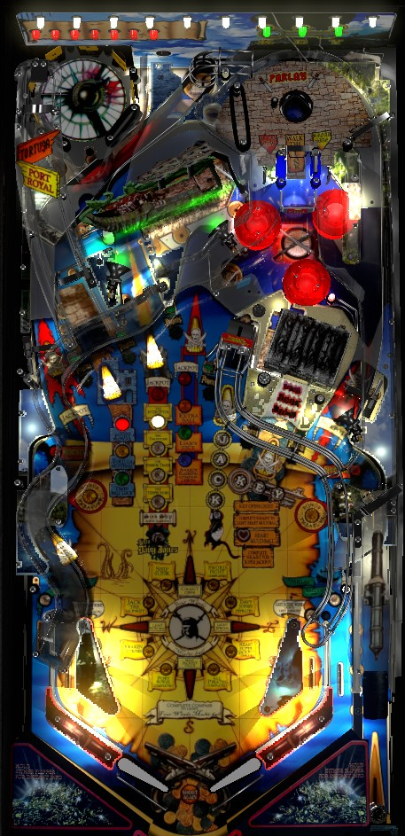

Not to be confused with Pirates of the Caribbean (Jersey Jack, 2018). This game has a dot matrix display while Jersey Jack's version has a full LCD screen.
Repeated shots to the left ramp can start Tortuga Multiball at almost any time; making the left ramp during this multiball temporarily increases the playfield multiplier for all scoring. Playfield multipliers should be stacked with bonuses from destorying Ships or collecting jackpots from the Heart sequence (shoot the treasure chest on the right) for big points. Progress through the game as a whole requires completing the Compass on the center of the playfield; the two North and two South tasks are trivial and will likely happen accidentally, while the East tasks require super jackpots at the end of long multiballs started by bashing the Ship and Chest.
The below picture of Pirates of the Caribbean's playfield was taken from the VPX recreation by SliderPoint, Freneticamnesic, et al.

A full plunge goes to the upper playfield area in the top right, where the ball can exit in one of 4 ways.
A fifth plunge option is to short plunge, which drops the ball on the habitrail toward the right flipper. There's no direct award for doing this, but it can help ensure that you get control of the ball quickly. Short plunging and then immediately shooting the side lane in the lower left awards a Super Skill Shot worth 3,000,000 points. After making a Super Skill Shot, if the ball leaves the lower left side lane out the top and goes across the table to land in the lower right side lane, a Super Duper Skill Shot worth 10,000,000 points is scored.
Flipper lane change is available for rotating which top lanes are lit, which is indicated by the three green LEDs on the back panel of the game. Completing the top lanes qualifies the Key toward progress the Treasure Chest toward Heart Multiball (explained in detail later), gives a points award that starts at 500,000 points and increases by 250,000 each subsequent time, and adds 3 to the bonus multiplier.
Sinking a Ship requires making a series of shots to the Ship toy, located just to the left of the center lane. Scoring and shot count for Ships works as follows:
There are 4 ships that are always sunk in the same order: Interceptor, Dauntless, Edinburg Trader, and Terpsichore. All ships start Battle the Kraken when they are destroyed; sinking the Terpsichore starts Fight Davy Jones as well. Fight Davy Jones is a 4-ball multiball. Davy Jones has a health bar similar to the Kraken. The ship toy will rock back and forth violently, and your goal is to hit the ship toy itself. If you miss the ship and shoot the lane behind it, you make progress on the Kraken. If you hit the ship itself, you do damage to Davy Jones and score more points as Davy Jones has less health remaining, with later shots being worth over 2,000,000 points. Defeating Davy Jones scores 5,000,000 points and resets the ship sequence so that you can fight all 4 ships again. If you drain into single ball play during Fight Davy Jones, you will need to re-sink the Terpsichore; it will only take 1 shots to destroy the Sails, but after doing so, it will take a full 5 shots to re-sink the ship, and when Fight Davy Jones restarts, Davy Jones will have his full health bar back.
Sinking one ship lights Ship Sunk on the north side of the compass.
Defeating the Kraken after sinking any ship lights Kraken Destroyed on the west side of the compass.
Completing Fight Davy Jones lights the Davy Jones Defeated light on the east side of the compass.
Shooting the left ramp will put the ball onto the turntable in the back left of the game, which spins quickly. The ball will be thrown into the standup targets that surround the turntable. At first, a post blocks the ball's exit out the bottom of the turntable, but this post lowers itself after a few seconds. As turntable targets are hit, the red lights on the back panel of the game will light to spell Tortuga. The more times Tortuga Multiball has been played, the more turntable targets need to be hit to spell Tortuga. Spelling Tortuga lights Port Royal Completed on the south side of the compass and qualifies the Timed Lock.
With the Timed Lock qualified, shoot the left ramp to lock a ball. A new ball will be plunged, and you have 10 seconds to lock that ball at the left ramp as well. Including the ball that started the Timed Lock sequence, up to 3 balls can be locked at the turntable at once. If you successfully lock all 3 balls, a 4th ball is plunged, and all balls are released to start a 4-ball Tortuga Multiball. If the 10-second timer ever expires, all locked balls are released and Tortuga Multiball begins with either 2 or 3 balls. If only one ball is on the turntable during Timed Lock and the ball on the main playfield drains, the chance for Tortuga Multiball is lost, and the turntable ball will immediately start making progress toward spelling Tortuga on the back panel again.
At the start of Tortuga Multiball, the playfield multiplier is equal to the number of balls in play. After a few seconds, this is decreased back to a standard 1x playfield. The playfield multiplier can be re-increased by 1x for each ball shot back onto the turntable during multiball, with playfield multipliers being reset after all balls leave the turntable. There are no jackpots or other scoring features that specifically belong to Tortuga Multiball; this multiball serves as a way to build up playfield multipliers that can be used in conjunction with sinking Ships (see above) or working toward Heart jackpots (see below).
At the start of the game, the jackpot value is 350,000 points. Shots to the left orbit or the center lane's saucer when they are not lit for anything else add 25,000 points to the jackpot. The jackpot maxes out at 2,000,000 points. The jackpot value carries over from ball to ball until it exceeds 1,000,000 points, after which the jackpot will be reset to 1,000,000 points at the start of each future ball. Completing the 2 South compass features (Port Royal Completed and All Pirates Completed) increases the jackpot to its maximum of 2,000,000 points for the rest of the current ball only, and draining will reset to the jackpot to 1,000,000 points if it was previously higher than 1,000,000, or its pre-Max-Jackpot-award value otherwise.
At the start of each ball, you will need to collect a Key to begin making progress on the Dead Men's Chest toy in the near right. Letters in Key can be earned by making unlit top lanes or shooting the Dead Man's Chest toy itself. After Key has been spelled, shots to the Dead Man's Chest award letters in Heart. Earning any single letter in Heart lights jackpots at the left orbit, the Ship, the center lane, and the right orbit. You can either make other shots around the playfield to try to score these jackpots, or you can keep shooting the Chest to earn letters in Heart. When Heart is spelled, the next shot to the Chest starts Heart Multiball. If you drain before spelling Heart, you will need to recollect a Key, but the number of Heart letters you have earned is retained.
Heart Multiball is, on its own, a three ball multiball. All four jackpot shots will flash; making any of them scores a jackpot and lights that shot solidly. Making all 4 jackpot shots causes them to flash again. Any shot to the Dead Man's Chest scores a Heart letter, but not a jackpot. When Heart is spelled during multiball, the next shot to the Chest awards the Heart Super Jackpot, which is equal to 2,000,000 points plus an additional 150,000 for each regular jackpot earned during this Heart Multiball. This resets the Heart Multiball sequence and lights the Heart Super Jackpot award on the east side of the compass. If you do not collect a Heart Super Jackpot during Heart Multiball, you effectively have to start the process over from the beginning, including earning a Key, spelling Heart to light multiball, and then spelling Heart from scratch during multiball.
Each pop bumper hit awards progress in a Sword Fight. Completing a Sword Fight lights the Sword Fight Completed award on the North side of the compass and increases the bonus multiplier by 2. The first Sword Fight award requires 20 pop bumpers, and all future Sword Fight awards require 2 more bumpers than the previous.
Shots to the center flip ramp award letters in Jack. When Jack is spelled, a hurry-up begins. This hurry-up starts at 2,000,000 points, counts down to 500,000 extremely quickly, and is collected with another shot to the center flip ramp. Collecting the hurry-up at any value lights the Jack the Monkey insert on the West side of the compass. If you do not collect the hurry-up, you need to spell Jack again with 4 more shots to the flip ramp to get another chance.
6 green standup targets labelled Pirates are located around the game. The left ramp, Ship, center flip ramp, and Dead Man's Chest each have targets on either side of them. Hit a target to light it. Lighting all 6 targets lights All Pirates Completed on the South side of the compass, If the Pirates were completed during single ball play, the center lane saucer will be lit for a Liar's Dice mystery award, which can also only be collected during single ball play. Completing the Pirates during any multiball gives a points award worth 200,000 the first time and increasing by 10,000 each subsequent time. Completing the Pirates in single ball play when Liar's Dice is already lit does nothing; you cannot stack uses of Liar's Dice.
The list of Liar's Dice awards includes:
This list may not be exhaustive.
During single ball play, if the ball enters the center lane saucer and the most recent switch hit was a pop bumper, features tied to the center lane such as Liar's Dice and Extra Ball will not be awarded, requiring you to access the saucer via the center lane to earn the awards. Liar's Dice cannot be played during multiball, but Extra Ball and flashing compass awards can be earned during multiball with a ball that kicks leftward from the pops into the saucer.
The compass on the playfield has large red arrows for the directions North, South, East, and West, with two awards straddling each red arrow. Collecting both awards in a direction causes the red arrow between them to flash, and shooting the center lane collects the rewards corresponding to all flashing red arrows. These are:
Collecting all 4 red arrow awards qualifies Four Winds Multiball wizard mode, which is also started at the center lane saucer, and can only be started during single ball play.
Four Winds Multiball is a 4-ball multiball with a generous ball saver. The goal is to complete the four winds by collecting a hurry-up at a randomly selected shot, then recollect the scored hurry-up value at each of the shots that can be lit white with a skull and crossed swords. These shots include the lower left side lane, left orbit, left ramp, Ship, center lane, center flip ramp, Dead Man's Chest, and right orbit. For the first wind, the hurry-up starts at 2,000,000 points, and shooting the flashing shot scores the remaining value and locks in that value for the rest of the shots on that wind. The second, third, and fourth winds have hurry-ups start at 3,000,000, 4,000,000, and 5,000,000 points respectively. All hurry-ups time out after counting down to 25% of their original value; if a hurry-up times out, you immediately advance to the "shoot all the white lights" portion of that wind at the minimum hurry-up value. Completing all four winds before multiball ends advances you to phase 2 of the wizard mode, Gauntlet of Pirates.
Gauntlet of Pirates begins as soon as the last shot is made for the fourth wind in Four Winds Multiball. The goal of Gauntlet of Pirates is defeat twelve pirates. To start a pirate, shoot the left ramp; each target hit on the turntable rotates which pirate is qualified. Each pirate corresponds to their own shot somewhere in the game, and will be either one of the shots indicated by a skull and crossed swords (except the ship) or one of the six green Pirates post targets. Hit whichever of these shots is flashing to challenge the pirate, then shoot the Ship to defeat them. Challenging a pirate scores 500,000 points the first time, and 100,000 for each subsequent pirate: defeating them scores 10 times that amount (5,000,000 the first time, increasing by 1,000,000 each time). The twelfth and final pirate awards 2,500,000 to challenge and 25,000,000 to defeat. Shooting the Kraken lane or the lower side lanes give a Kraken Jackpot or Collect Treasure bonus respectively; both are worth 1,000,000 points. Progress on the 12 pirates that you fight is indicated on the compass using the 8 yellow lights for the feature requirements and the 4 red triangles for awards. Defeating a pirate corresponding to a red triangle on the compass adds a ball to the playfield if there are not already 4 balls in play. Once all 12 pirates in the gauntlet have been defeated, all major shots in the game score a Gauntlet Victory award worth 2,500,000 points for the rest of multiball.
Making any meaningful shot during this multiball (left ramp to start a pirate, flashing shot to challenge a pirate, ship to defeat a pirate, a Kraken Jackpot or Collect Treasure, or a Gauntlet Victory) scores 1 Gauntlet Point. Gauntlet Points are tracked separately from pinball score and have their own tracked high score on the machine, but they seem to have no other direct impact on scoring rules or playfield features.
Returning to single ball play at any point during Four Winds Multiball or Gauntlet of Pirates Multiball returns the game to normal play with the Compass completely reset. Supposedly, if you light the entire Compass again, you can pick up where you left off if you drained during Four Winds Multiball. I have not tested if this also applies to Gauntlet of Pirates Multiball. the Gauntlet Victory shots that follow it, or the number of Gauntlet Points earned. Completing the Compass is extremely difficult to do once in a game, let alone twice.
The lower left and lower right side lanes score 2 Treasure, and the standup targets attached to the walls that form those side lanes score 1 Treasure. Making a side lane lights the nearby standup target for Bonus Treasure, so the next hit to that target scores 5 Treasure instead of 1. Each Treasure earned is worth 5,000 points in base end of ball bonus. Reaching any Treasure amount that ends in 25 (except for 225) lights an extra ball at the center lane saucer. Reaching any Treasure value that ends in 75 awards Hold Bonus (which actually holds the bonus multiplier, since base bonus is based on Treasure which always carries from ball to ball). Reaching 225 Treasure lights a Special at one of the side lanes. There does not seem to be a meaningful limit on the Treasure counter; if there is a limit, it is at least 575 Treasure.
Rolling through the left or right in lane when lit during single ball play causes the opposite orbit shot to flash for a few seconds. Making this shot while flashing gives a Catch the Wind award, which is equal to the jackpot value (and also advances the jackpot value by 25,000 points). If the left or right in lane is not lit, shoot the right or left orbit shots respectively to relight it.
Pirates of the Caribbean has a conventional in/out lane setup. In lanes can be lit for Catch the Wind as described in the previous section. Out lanes can be lit for a Parlay ball save by spelling Parlay through shots to the hole located above the top lanes.
Before bonus multiplier is considered, end of ball bonus has 2 components: the flat bonus, and Treasure. The flat bonus is equal to 25,000 on the first ball of the game, and 50,000 on the second ball of the game; after that, each ball's flat bonus is 50,000 more than the previous ball, up to a maximum of 250,000 points. Each Treasure earned over the course of the entire game so far contributes 5,000 points to the end of ball bonus. Flat bonus and Treasure bonus are added together and multiplied by the bonus multiplier to calculate the full end of ball bonus.
There are 4 ways to advance the bonus multiplier: the Parlay hole awards 1 bonus multiplier, any Sword Fight completion at the pop bumpers awards 2 bonus multipliers, lighting all 3 top lanes awards 3 bonus multipliers, and one possible Liar's Dice mystery award is 5 bonus multipliers. The maximum bonus multiplier is 30x; attempting to advance the multiplier past 30x in any way gives a points award equal to 250,000 the first time and increasing by 25,000 each subsequent time. The value of the end of ball bonus depends rather heavily on how lively your game's pop bumpers are, as bonus is not significant at low multipliers and Sword Fight bonus multipliers are generally far easier to earn than other methods.
| If you need... | ...consider the following strategies. |
| 1,000,000 points | Make a couple shots to the ship, start a Tortuga Multiball, or collect a Heart letter from the Chest so that you can pick up one or two jackpots. |
| 5,000,000 points | Sinking a Ship and defeating the Kraken in the ensuing multiball usually gives points in the mid-7 figures. If the jackpot value has been built up a decent amount, you can also make up these points from the jackpots lit during the initial spelling of Heart, before Heart Multiball. |
| 20,000,000 points | At this level of score, stacking multiballs tends to be quite valuable. Having Heart Multiball running at the same time as the Victory Jig that follows Battle the Kraken puts big and increasing points on every shot in the game. |
| 50,000,000 points | If the jackpot is very high or at maximum, either naturally or via the Max Jackpot south wind award, it's not too unreasonable to pull mid-8-figures out of a single Heart Multiball with all jackpots at or close to 2,000,000 points. If the jackpot is not high and/or Max Jackpot has already been used on the current trip around the Compass, work toward fighting Davy Jones by sinking Ships and have all three multiballs (Tortuga, Battle the Kraken, and Heart) running together as often as possible. |
| 100,000,000 points or more | If you need this many points and have already completed at least one of Davy Jones Defeated and Heart Super Jackpot on the east side of the Compass, go for the other one and try to make a run at Four Winds Multiball. If you're not particularly close to completing the Compass, you're going to need to chop a lot of wood to make up this much score: continue to play multiballs as often as possible and build the jackpot up whenever you can to give yourself a runway to high value jackpots and Ship awards later. |